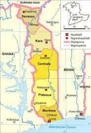
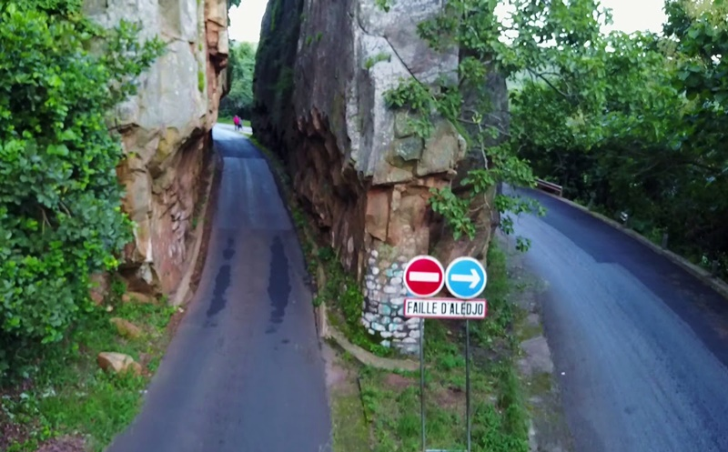
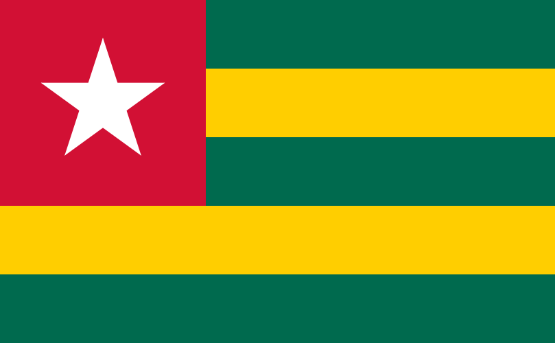

TOGO
SOMMAIRE
-
-
-
-

DESCRIPTION DU TOGO
Le Togo est un pays d'Afrique de l'Ouest situé dans le golfe de Guinée. Il est connu pour ses plages bordées de palmiers et ses villages au sommet des collines. La région du Koutammakou est habitée par le peuple des Batammariba, occupant des huttes en argile traditionnelles ressemblant à des forteresses qui remontent au XVIIe siècle. La capitale Lomé est dotée d'un bazar sur plusieurs étages appelé Grand Marché ainsi que du Marché aux fétiches qui propose des remèdes et des talismans traditionnels en rapport avec le culte vaudou.
VUE D'ENSEMBLE
Le Togo est un pays de l’Afrique de l’Ouest dont la population est estimée, en 2018, à environ 7,9 millions d’habitants pour une densité de 133 hab. /km2. Il est voisin du Burkina Faso au nord, du Bénin à l'est et du Ghana à l'ouest et possède une façade atlantique au sud. Le Togo est l’un des plus petits États africains avec une superficie de 56 785 km2, s’étirant sur environ 700 km du nord au sud avec une largeur n’excédant pas 160 km. Cette faible superficie n’empêche pas le Togo d’être reconnu pour la grande diversité de ses paysages.
LES PLACES A VISITER
- La plage de Lomé s'étend le long du littoral sur la partie Ouest de la capitale le long des boulevards du Mono et de la République LA PLAGE DE LOMÉ
- Le mont Agou est le plus haut sommet du Togo, culminant à 986 mètres d'altitude et se situant entre Amoussoukope et Kpalimé. Il représente le point le plus élevé de la chaîne de l'Atacora qui s'oriente sud-ouest / nord-est, et qui s'étend d'Accra au fleuve Niger, en coupant le Togo en arc de cercle. LE PIC D'AGOU
- la faille d'Alédjo est le nom donné à cette impressionnante roche naturelle volumineuse située sur l'axe Ouagadougou-Lomé au Togo.LA FAILLE D'ALEDJO
ANECDOTES
- Le drapeau à étoile blanche sur fond rouge, barré de lignes horizontales jaunes et vertes, flotte pour la première fois dans les bâtiments officiels du Togo ce 27 avril 1960. Ce jour-là, le pays obtient l'indépendance, et fait son entrée dans la communauté internationale. Il met fin, aussi, à plus d'un siècle de domination entamée dans la seconde moitié du XIXe siècle. À cette période, des comptoirs portugais, danois ou encore hollandais sont déjà disséminés sur le territoire. Mais le 5 juillet 1884, un explorateur allemand, Gustav Nachtigal, va plus loin. Sur la plage de Baguida, il signe un accord de protectorat avec un chef local, le roi Mlapa III. La colonisation du Togo et l'annexion de ses territoires commencent. 
-
Le Togo est représenté au sein du groupe d’amitié Autriche-Afrique subsaharienne par six députés. Il s’agit des honorables Molgah Abougnima, Adjaratou Abdoulaye, Yawo Dotse Afetse, Nabaguédjoa Banlepo, Yempabe Bonsa et Salahaddine Issa-Touré.
-
Résultat de recherche d'images pour "Le peuplement du Togo"
Toutes les ethnies peuvent être regroupées en cinq grands groupes : les Adja-Ewé (44 %), les Kabyè-Tem (26,7 %), les Para-Gourma (16,1%), les Akposso-Akébou (4 %) et les Ana-Ifé (3,3 %). La langue officielle du Togo est le français.
LE PEUPLEMENT DU TOGO